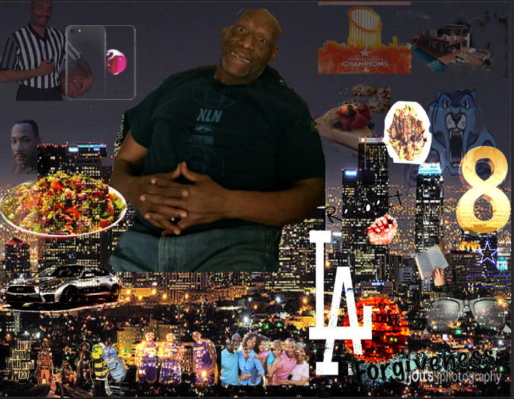
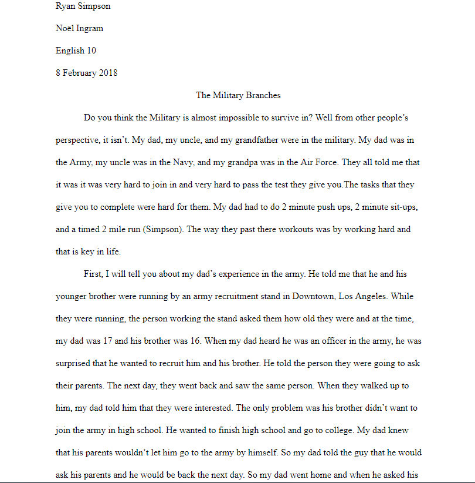

I chose these images because they all relate to my father. The eight on the portrait stands for my dad having 8 kids. I put the basketball referee because my dad is a basketball referee. I also put the Los Angeles Dodgers and Los Angeles Lakers because those are his favorite teams for baseball and basketball. These pictures relate to my father because these are the images that he chose himself and he is related in some way to all of these pictures. The one picture that he can relate to in historical is the one with Martin Luther King Jr. The way he can relate to this picture is while my dad was in high school Martin Luther King died while he was watching one of his marches. I made Martin Luther King one of the big pictures because my dad told me that he had an influence in his life. He told me that he never really got to talk to him but, he said that “Even though he was older than me I looked to him because he was a good person and he was respectful to anyone and that is key in life”. I made pictures like western movies small pictures because those movies didn’t really have any impact on his life. He is just a fan of those type of movies. I put the army picture on the portrait because he was part of the army, but then he left the army. The picture of the Chinese Chicken salad is on there because that is also one of his favorite foods. The Cajun pasta is also his favorite type of food. The jaguar picture is there to represent his high school Foshay and their mascot.
.  